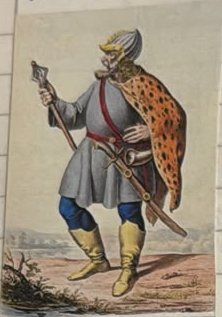
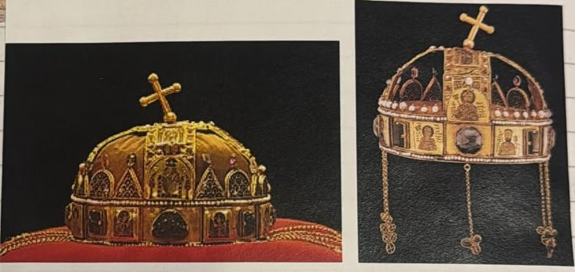
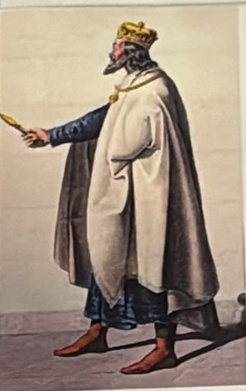
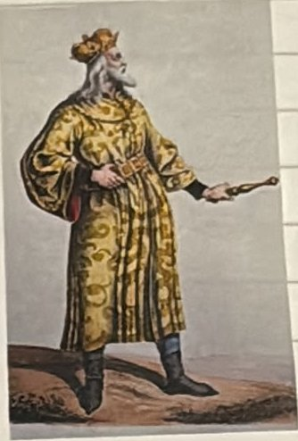

10. století – 1301
Uherské království
Maďaři přišli jako kočovníci z asijských stepí a rozvrátili Velkou Moravu. Po porážce na Lechu roku 955 se usadili v Podunajské nížině. Roku 1000 byl korunován první uherský král Štěpán I. Svatý z rodu Arpádovců, který vymřel roku 1301.
- 955 Ota I. poráží Maďary na řece Lech; Maďaři se usazují v Podunajíi v tématu Svatá říše římská
- 1000 Štěpán I. Svatý korunován prvním uherským králem
- 1222 Ondřej II. vydává Zlatou bulu uherskou
- 1301 Smrtí Ondřeje III. vymírají Arpádovci po meči
Maďaři: kočovníci z asijských stepí

Maďaři (česky také Uhři) původně nebyli Slované ani Germáni. Byli to kočovníci z asijských stepí: žili na koních, se stády, a neměli stálé vesnice. Jejich jazyk je proto úplně jiný než čeština; je vzdáleně příbuzný s finštinou a estonštinou.
Maďaři byli výborní jezdci a lučištníci. Rychle přijeli, vyloupili kraj a zase zmizeli. Takové nájezdy podnikali po celé Evropě, až do Německa, Itálie a Francie.
Kníže Arpád, zakladatel dynastie Arpádovců, sjednotil kočovné maďarské kmeny. Na počátku 10. století Maďaři vtrhli na Velkou Moravu a rozvrátili ji. Velká Morava tím zanikla a Maďaři se stali novými sousedy Čechů.
Vznik Uherského království
Roku 955 Maďary porazil východofranský král Ota I. v bitvě na řece Lechu (víc v tématu Svatá říše římská). Po této porážce s nájezdy přestali a usadili se v Podunajské nížině, tedy v rovinách kolem Dunaje (dnešní Maďarsko). Z kočovníků se stali zemědělci a založili Uherské království.
Prvním králem se stal Štěpán I. Svatý z rodu Arpádovců. Korunován byl roku 1000. Štěpán šířil v zemi křesťanství a po smrti byl prohlášen za svatého, proto Svatý.

Po Štěpánovi je pojmenována uherská královská koruna, Svatoštěpánská koruna. Je to nejvzácnější poklad Maďarska.
Další Arpádovci


- Ondřej II. vydal roku 1222 Zlatou bulu (uherskou). Šlechtici si v ní vymohli svá práva a směli se králi vzepřít, kdyby je porušil. Bula je listina se zlatou pečetí.
- Béla IV. dokázal obnovit říši po ničivém vpádu Mongolů. Mongolové (Tataři) přijeli z dalekého východu, porazili uherské vojsko a vypálili zemi. Béla pak dal stavět kamenné hrady, které se daly lépe bránit.
- Posledním králem z rodu byl Ondřej III. Jeho smrtí roku 1301 dynastie Arpádovců vymřela po meči. To znamená, že nezůstal žádný mužský potomek, který by mohl vládnout.
Paměťový obraz
- Jezdec s lukem na stepi: Maďaři kočovníci, Arpád, konec Velké Moravy.
- Jezdec spadne do řeky Lech: 955, Maďaři sesedají z koní a orají Podunajskou nížinu.
- Koruna s křivým křížkem: Štěpán I. Svatý, rok 1000.
- Zlatá pečeť a kamenný hrad: Ondřej II. a Zlatá bula 1222, Béla IV. staví hrady po Mongolech.
- Zlomený meč: 1301, Arpádovci vymřeli po meči.
Vyzkoušej se
Odpověz nahlas, teprve pak otevři odpověď. Procvičit náhodně
Odkud Maďaři (Uhři) původně přišli a jak žili?
Z asijských stepí; byli to kočovníci a podnikali nájezdy po celé Evropě.
Kdo sjednotil maďarské kmeny a založil dynastii?
Kníže Arpád, zakladatel dynastie Arpádovců.
Kterou říši Maďaři na počátku 10. století rozvrátili?
Velkou Moravu.
Co se stalo roku 955 a co potom Maďaři udělali?
Ota I. je porazil na řece Lechu; usadili se v Podunajské nížině a založili Uherské království.
Kdo byl prvním uherským králem a kdy byl korunován?
Štěpán I. Svatý z rodu Arpádovců, roku 1000.
Jak se jmenuje uherská královská koruna?
Svatoštěpánská koruna.
Podle čeho poznáš Svatoštěpánskou korunu?
Kříž na jejím vrcholu je ohnutý nakřivo.
Kdo vydal roku 1222 Zlatou bulu a co v ní bylo?
Ondřej II.; uherská šlechta v ní získala svá práva.
Co dokázal Béla IV.?
Obnovil říši po ničivém vpádu Mongolů a dal stavět kamenné hrady.
Kdo byl posledním Arpádovcem a kdy zemřel?
Ondřej III., roku 1301.
Co znamená, že rod „vymřel po meči“?
Nezůstal žádný mužský potomek, který by mohl vládnout.
Které tři zlaté buly znáš a z kterých let?
1212 sicilská, 1222 uherská, 1356 Karla IV.
Komu jsou příbuzné maďarština a jak se liší od češtiny?
Finštině a estonštině; není to slovanský jazyk.